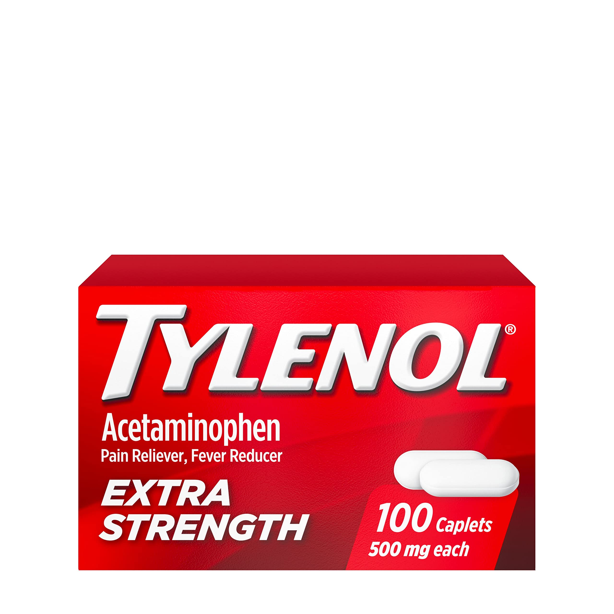
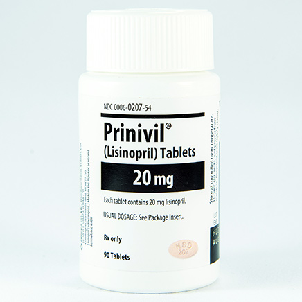
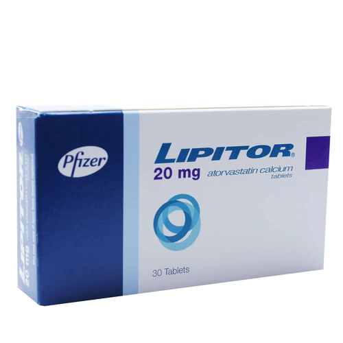
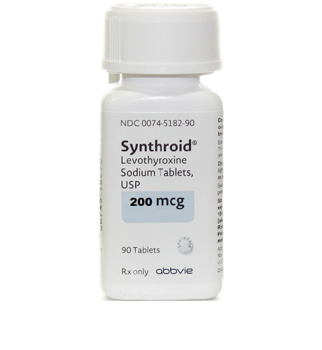
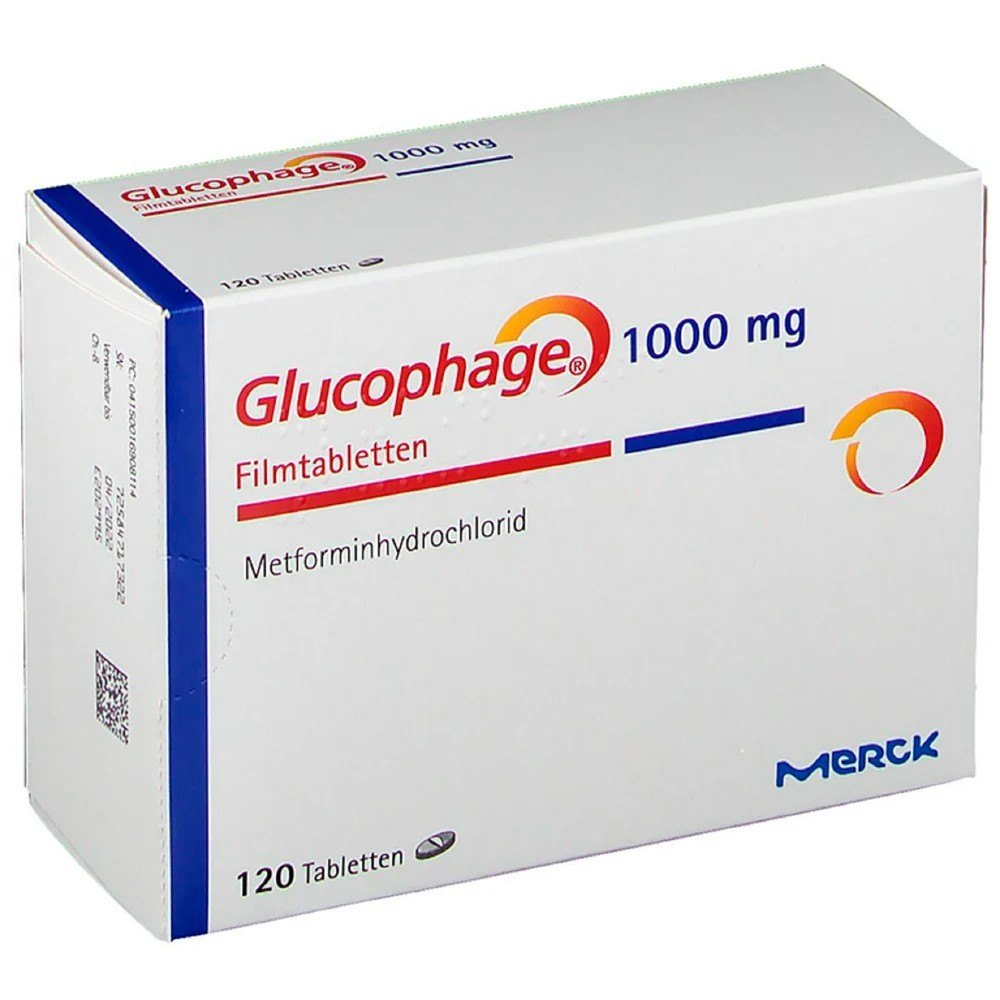
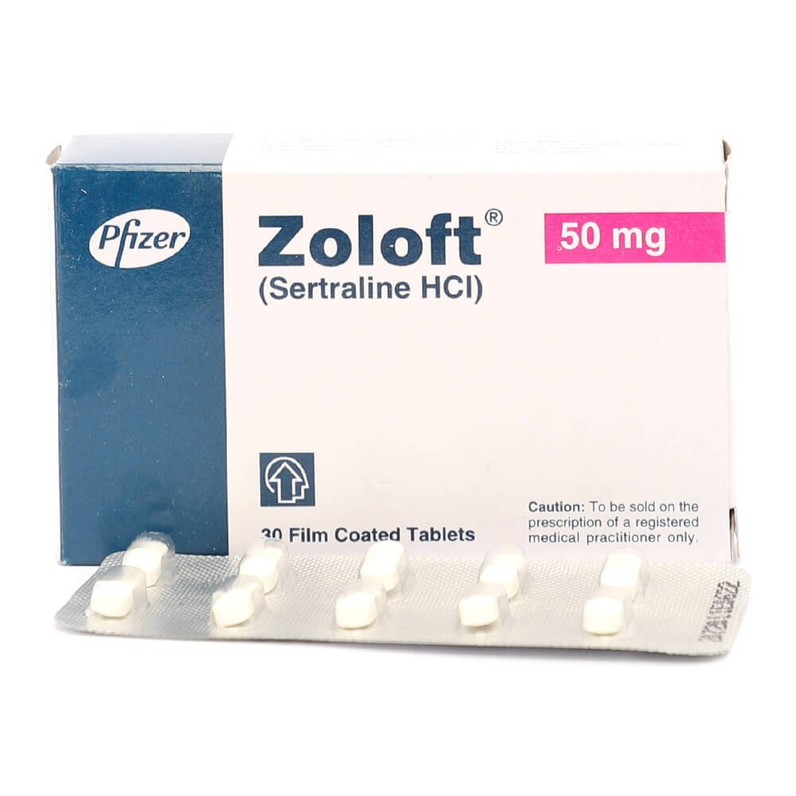
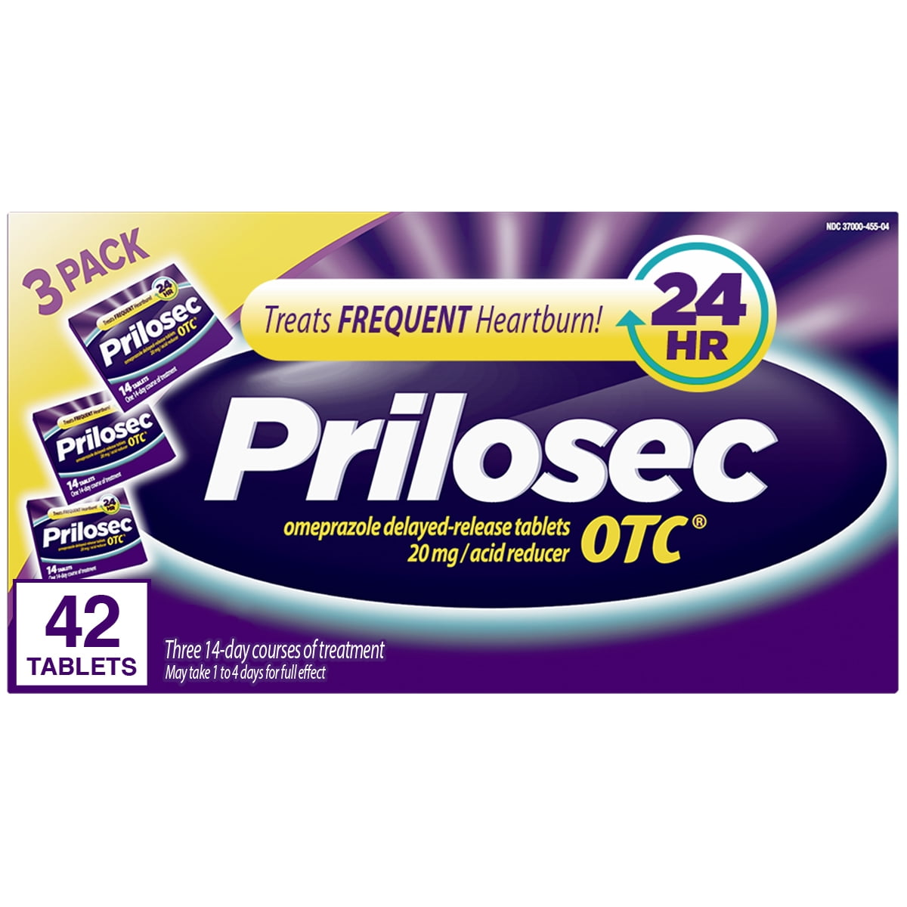
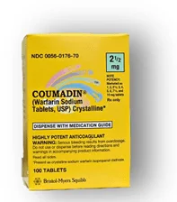

Ibuprofen (Advil, Motrin)
Uses
- Pain Relief
- Reducing Inflammation
- Fever Reduction
Side Effects
- Upset Stomach
- Gastrointestinal Bleeding
- Allergic Reactions
- Increased Risk Of Heart Problems With Long-Term Use

Acetaminophen (Tylenol)
Uses
- Pain Relief
- Fever Reduction
Side Effects
- Liver damage (with high doses or long-term use)
- Allergic Reactions

Lisinopril (Prinivil, Zestril)
Uses
- High Blood Pressure (Hypertension)
- Heart Failure
Side Effects
- Dizziness
- Dry Cough
- Increased Potassium Levels
- Changes In Kidney Function

Atorvastatin (Lipitor)
Uses
- Lowering Cholesterol Levels
- Reducing The Risk Of Heart Disease
Side Effects
- Muscle pain Or Weakness
- Liver Problems
- Increased Blood Sugar Levels

Levothyroxine (Synthroid)
Uses
- Treatment Of Hypothyroidism (underactive thyroid)
Side Effects
- Rapid Heartbeat
- Nervousness

Metformin (Glucophage)
Uses
- Type 2 Diabetes Management
- Improving Insulin Sensitivity
Side Effects
- Upset Stomach
- Vitamin B12 Deficiency
- Lactic Acidosis (rare but serious)
- Diarrhea

Sertraline (Zoloft)
Uses
- Treatment Of Depression
- Anxiety Disorders
- Other Mental Health Conditions
Side Effects
- Nausea, increased risk of suicidal thoughts in young adults
- Sexual Dysfunction
- Increased Risk Of Suicidal Thoughts In Young Adults

Omeprazole (Prilosec)
Uses
- Reducing Stomach Acid
- Treating Acid Reflux
- Ulcers
- Gastroesophageal Reflux Disease (GERD)
Side Effects
- Headache
- Stomach Pain
- Increased Risk Of Bone Fractures With Long-Term Use

Albuterol (Ventolin, Proventil)
Uses
- Relief Of Asthma Symptoms
- Other Respiratory Conditions
Side Effects
- Rapid Heartbeat
- Nervousness
- Low Potassium Levels With High Doses
Warfarin (Coumadin)
Uses
- Blood Thinner To Prevent Blood Clots
Side Effects
- Risk Of Bleeding
